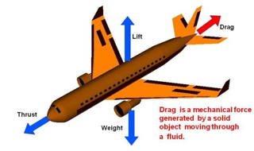
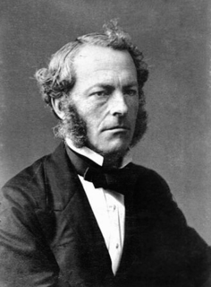

Day 07 - Drag Forces#

Announcements#
Homework 2 is due Friday
Video recordings will cease; I will try to record my tablet writing next week.
Class can still join zoom with password: phy321
Updated office hours (Danny-DC; Elisha-EA):
Monday 4-5pm (DC) - change?
Tuesday 5-6pm (EA)
Wednesday 4-5pm (DC)
Thursday 5-6pm (EA)
Friday 10-12pm (DC then EA); 3-4pm (DC)
Calendar changes and apologies#
I’m very behind on class prep. And I’m very distracted right now.
The notes for next week will be posted by Friday.
If you need anything or I’m missing, just drop me a note. I probably just missed it.
There will be no homework 9, and there will be no new material for the last week of class.
Instead, that week will be final prep for your projects that will be due Monday of finals week at midnight.
More details soon, but we will also use homework and midterms to help you make progress on your final projects.
Seminars this week#
WEDNESDAY, January 29, 2025
Astronomy Seminar, 1:30 pm, 1400 BPS, Michiel Lambrechts, Univ. of Copenhagen, Planet formation
FRIB Nuclear Science Seminar, 3:30pm., FRIB 1300 Auditorium, Brenden Longfellow of Lawrence Livermore National Laboratory, From Tensor Current Limits to Solar Neutrinos: 8Li and 8B Studies with the Beta-decay Paul Trap
Tomorrow’s Seminar#
Goals for Week 3#
Be able to answer the following questions.
What is Mathematical Modeling?
What is the process for analyzing these models?
Be able to solve “Simple” Motion Problems with Newton’s Laws.
Our man, Reynolds#

The Reynolds number is a dimensionless quantity.
It is a ratio of inertial forces to viscous forces.
\(\rho\) - density of the fluid
\(v\) - velocity of the object
\(L\) - characteristic length
\(\mu\) is the dynamic viscosity
Our man, Reynolds#
BTW, this is not a photo of Reynolds.
This is Stokes.
He developed the concept of the Reynolds number.
Reynolds “popularized” it according to the Wikipedia.
Discussion: What kinds of systems have a high/low Reynolds number?
Clicker Question 6-2#
Assuming a linear model for Air Resistance \(\sim bv\), we obtained this EOM for a falling ball:
What happens when \(\ddot{y} = 0\)?
The ball stops moving (\(v = 0\)).
The ball reaches a velocity of \(mg/b\).
The ball reaches a terminal velocity.
I’m not sure.